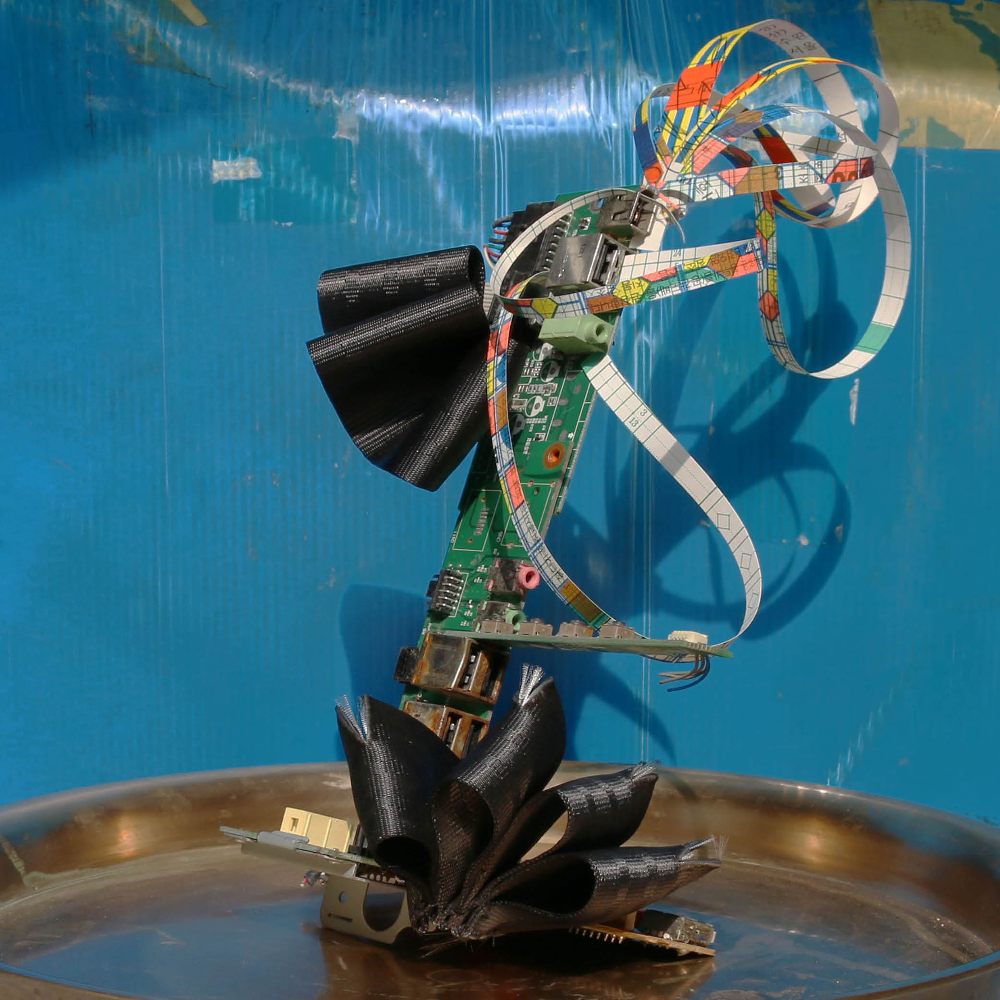
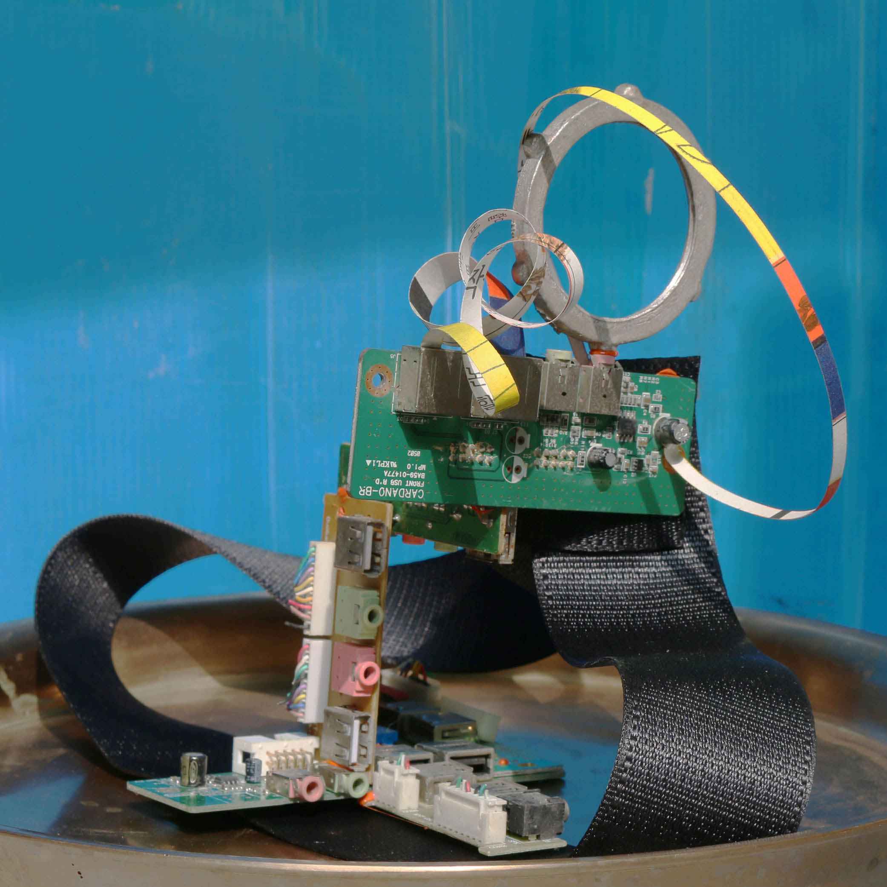
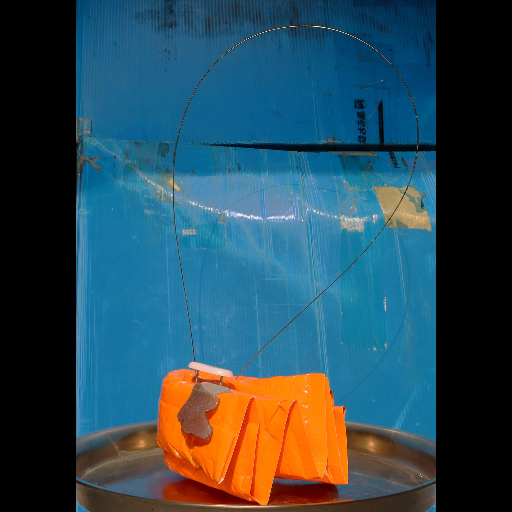
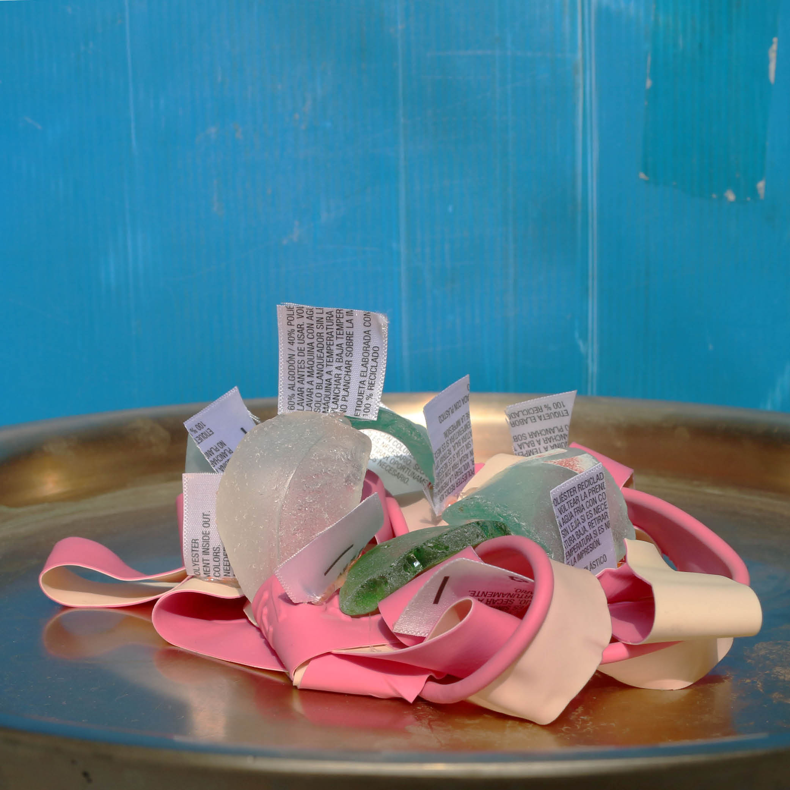
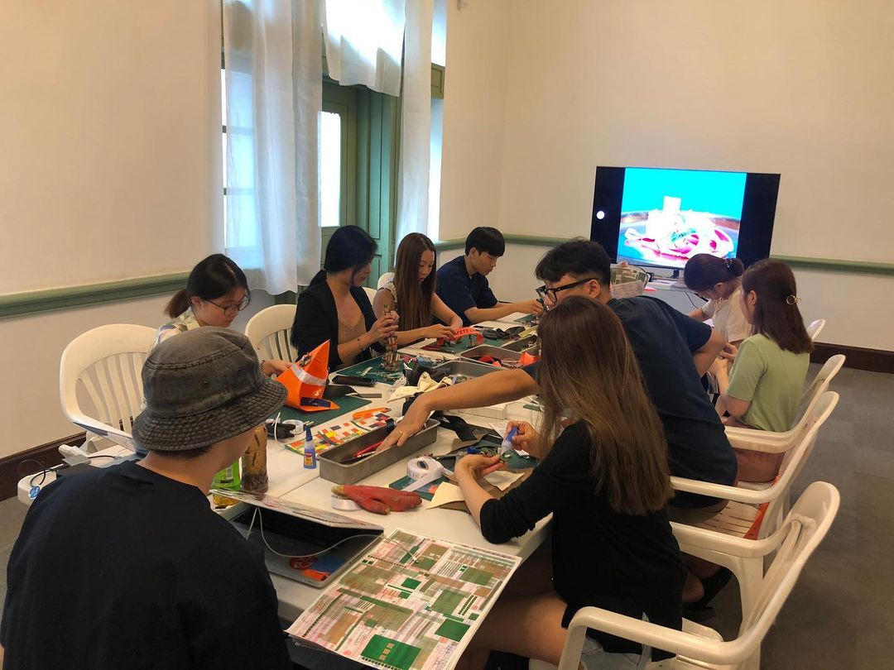
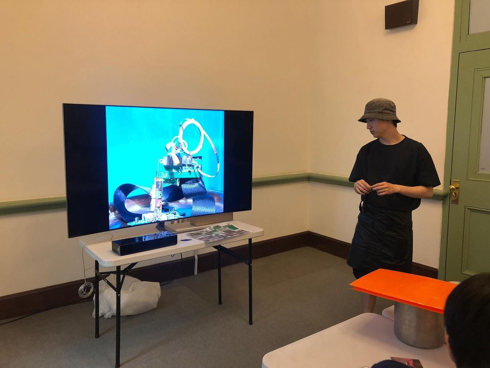
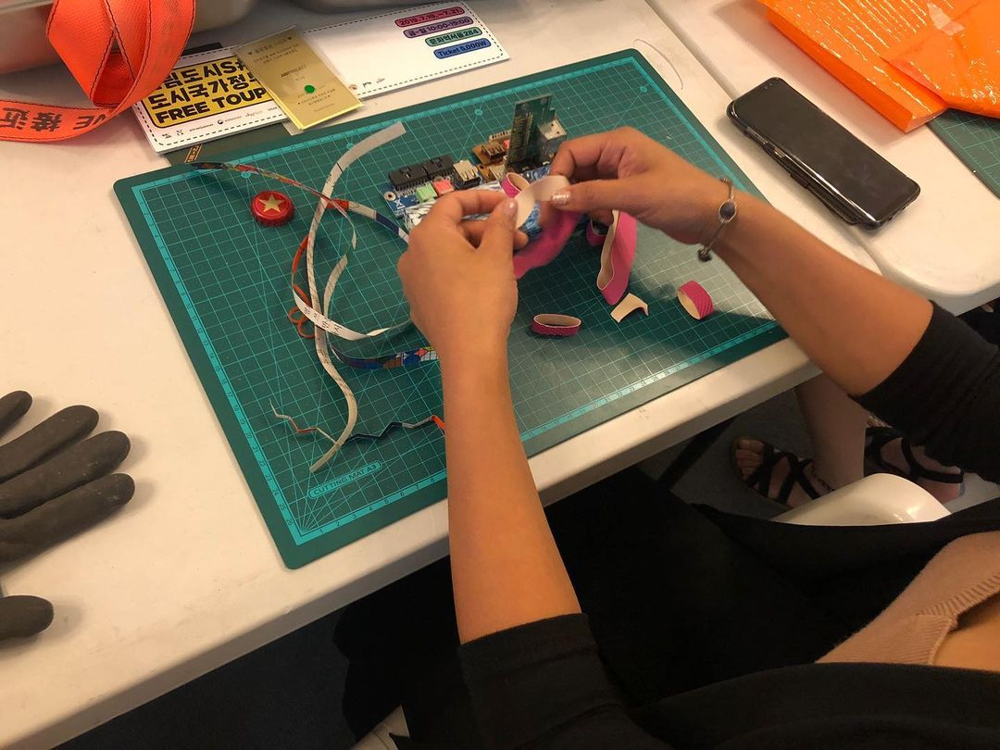
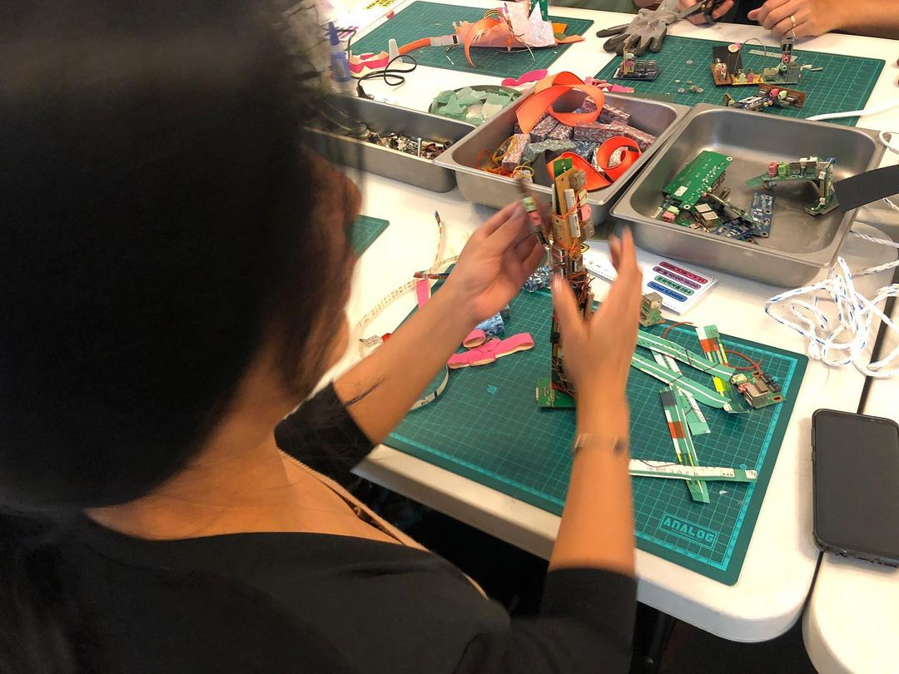

Sculptures and photo shooting for workshop 'Make pretty trash out of tras'.
This workshop is to change the perception of trash and introduce trash as a new material. This workshop was held as part of The Typojanchi 2019, Seoul
Client: Just-project
Type of work: Object, Workshop






